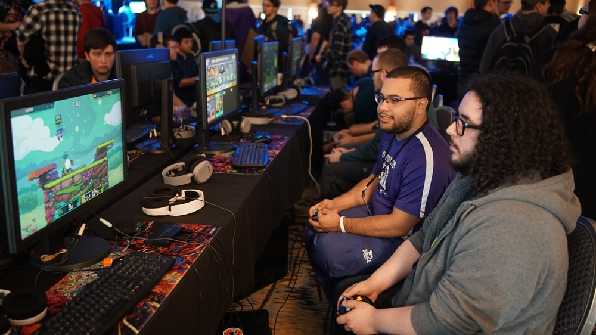
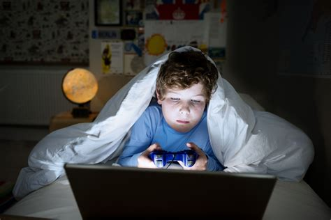
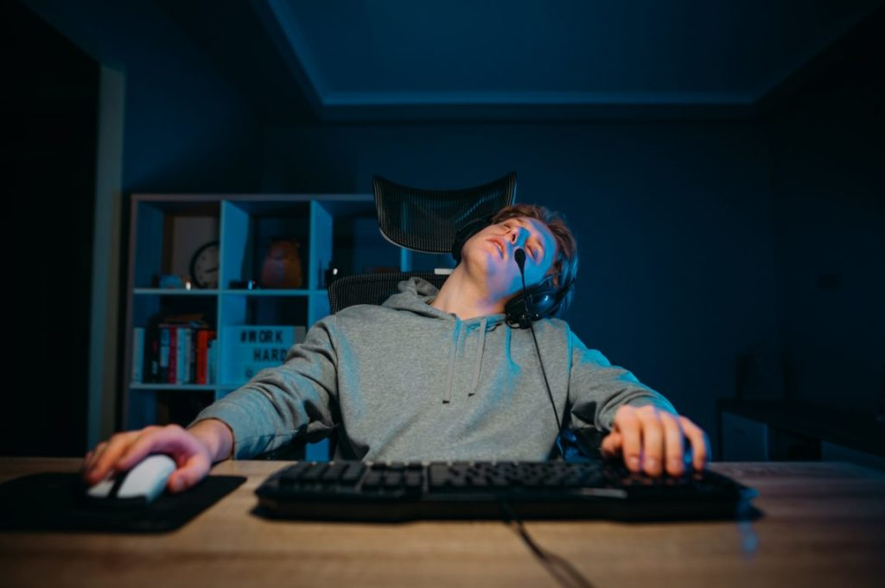

Spel är en självklar del av dagens kultur, precis som film, musik och litteratur. De berättar historier, väcker känslor och samlar människor.


Datorspel kan vara beroendeframkallande, ta tid från andra viktiga aktiviteter och påverka sömn och hälsa negativt.

Spel kan förbättra problemlösning, kreativitet och reaktionsförmåga. De främjar samarbete, socialt umgänge och kan vara en källa till avkoppling.
Auktoritära regimer censurerar ofta media, men spel har hittills undgått hård kontroll. De kan nå och påverka individer som utsatts för propaganda.